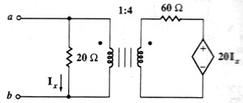

B07 AC analysis: Find the Thévenin equivalent of circuit with ideal transformer
Question. Find the Thévenin equivalent of the following circuit.

Solution:
You're assumed to be an advanced Symbulator user. Let's solve this problem in one step. Label nodes and elements (node b is 0 for it taken as ground). Type the following (you must understand what this means, since you have the experience of all the preceding examples).
sq/thevenin("rx,a,0,20.,0; r6,2,3,60.,0; t1,a,2,1,4; ed,3,0,20.*irx,0",a,0):zth
When asked, select AC (direct current) analysis, and input any frequency, 1 for example (it doesn't matters here, since there are no inductors or capacitors). 4Answer: The answer obtained is the right one.